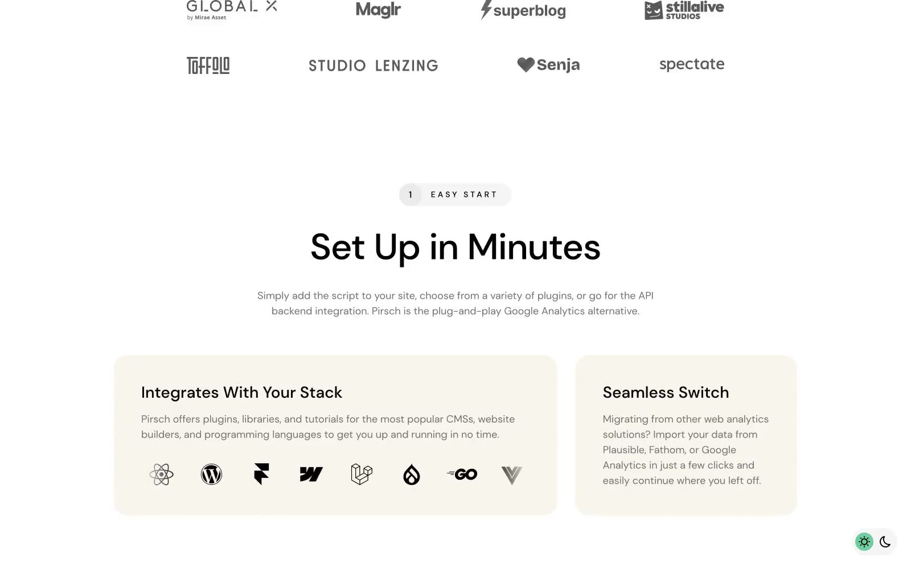

Pirsch Analytics 的 Design.md 主题展示，围绕B2B 产品、数据分析、数据仪表盘、企业服务组织页面。
Explore Pirsch Analytics's light SaaS design system: Midnight Ink #000000, Ghostly Gray #f8f5ed colors, DM Sans typography, and DESIGN.md for AI agents.

#f8f5ed: #f8f5ed#000000: #000000#FFFFFF: #FFFFFF#707070: #707070#ffda6e: #ffda6e#6ece9d: #6ece9d#181925: #181925#666666: #666666#999999: #999999#e8e8e8: #e8e8e8#dad9fc: #dad9fc#fafaf9: #fafaf9display: DM Sansbody: DM Sansmono: ui-monospacehints: DM Sans,ui-monospace